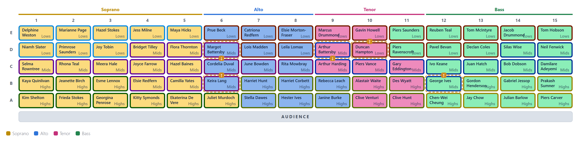
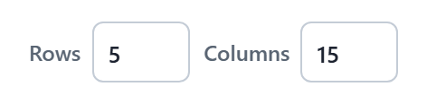

The stage
The stage is a fixed grid of chairs, drawn as the audience sees it: the front row is at the bottom, nearest the audience. Each chair is filled with its singer's section colour.

Views
View, over the stage, draws it one of two ways:
- Full stage shows every chair.
- By section shows each section on its own, cut out of the same stage with everyone else greyed out.
Colour by split picks one split to show as a coloured frame round each chair, so you can see where each part of that split sits. It only changes the colours: the arranger always seats for every split at once.
Seat labels shows or hides the row and column headings round the full stage.
Grid size

Rows and Columns set the size of the stage. Changing them keeps everyone in their chair; anyone left off the edge goes to the waiting area.
To move singers, fill the stage automatically, or leave gaps in it, see Arranging.